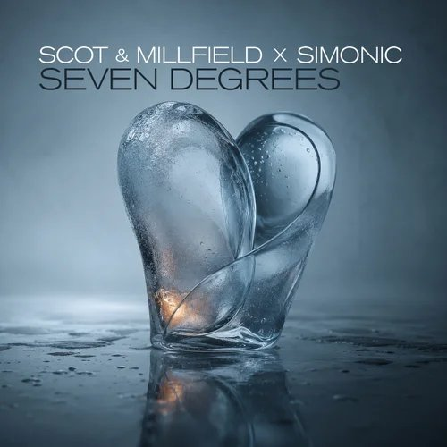
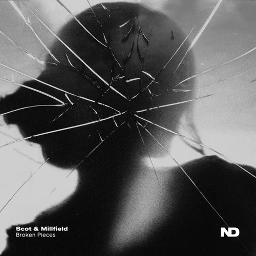
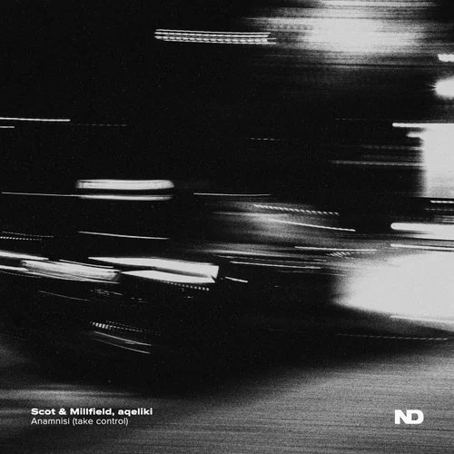
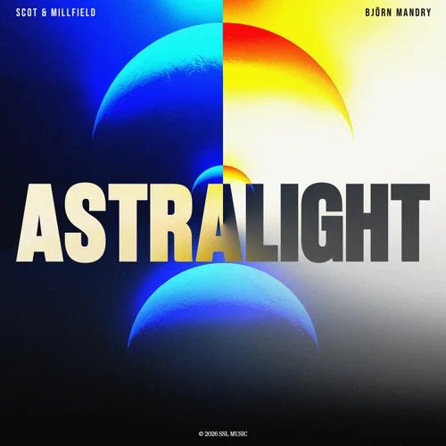
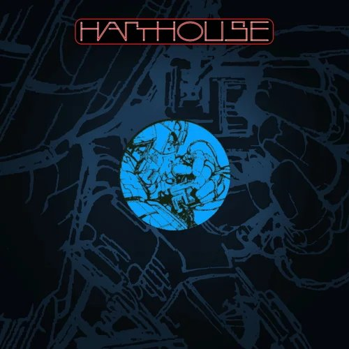

03 / Career
Balearic Deep House, forged in the Ruhr.
01 / Biography
Scot & Millfield are Daniel Lyall and Maik Drozdzynski from Mülheim an der Ruhr. School friends inspired by York and Chicane, they founded the project in 1999 and took their first studio steps with the Bass Bumpers.
Their sound sits between Balearic and Progressive: melodic deep house, trance and chill-out – atmospheric, warm, built for the hour the sun goes down. Releases on Armada, Black Hole, Enhanced, Harthouse and The Night Drive, an official “Café del Mar” remix and features on Dream Dance and Armada Chill mark the way.
Since 2024 the duo is managed by Torsten Stenzel and Adrian Zag (Hummingbird); in 2025 they signed a publishing deal with Hummingbird Music / Armada Music Publishing. Their listeners stretch from London to Mexico City and Sydney.
02 / Latest releases

28.08.2026Seven DegreesSubmental Records
19.06.2026Broken PiecesThe Night Drive
13.03.2026Anamnisi (take control)The Night Drive
30.01.2026AstralightSSL Music
28.11.2025Shut Wide EyesHarthouse
03 / Career
Milestones
Labels & allies
The Night Drive / Armada Music / Black Hole / Harthouse / Enhanced / Magik Muzik / Submental / SSL Music / ZYX Music / Blue Dot Chill
Worked with York · Caba Kroll · Torsten Stenzel · Au/Ra · Purple Schulz · DJ Sakin & Friends · Jay Frog · Thomas Foster · Cabriolet Paris · Simonic · Simon Alves · Taucher · Shears · aqeliki · Björn Mandry · DANCCER
04 / Contact & rights
Hummingbird
Torsten Stenzel & Adrian Zag
Publishing: Hummingbird Music / Armada Music Publishing – incl. sync and licensing
enquiries@hummingbirdmusic.group
hummingbirdmusic.group
Scot & Millfield
Lyall & Drozdzynski Musikproduktion GbR
Aktienstr. 69 · 45473 Mülheim an der Ruhr
scotandmillfield@gmail.com
Daniel Lyall
Maik Drozdzynski